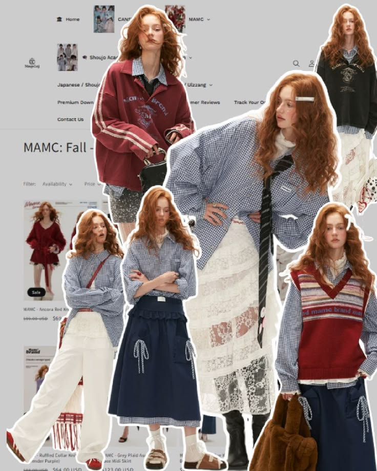
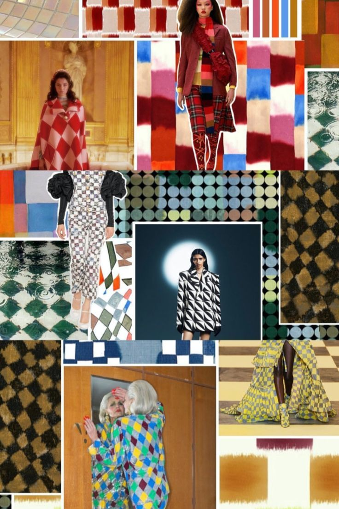

STYLE
This new autumn season brings fresh trends in colors and patterns, as well as
pieces from past seasons making a strong comeback. However, you don't need to
overhaul your entire wardrobe; we'll tell you which basics you need and the colors
you'll want to try.


Key Pieces
New seasonal pieces are a must-have for your wardrobe. These are the items that will help you create a stylish and trendy look for autumn.
From cozy sweaters to statement jackets,
these key pieces will elevate your
fashion game.
Jackets
Jackets are a must-have for autumn. From leather to denim, these pieces will keep you warm and stylish.
Sweaters
Sweaters are a staple for autumn. From chunky knits to lightweight options, these pieces will keep you cozy and fashionable.
Colors and Patterns
It's time to embrace the colors and patterns of the season. From warm earthy tones to bold prints, these colors and patterns will add depth and personality to your outfits. Experiment with different combinations to create unique looks that reflect your personal style.
Basic Tones
Basic tones are a must-have for autumn. From neutral shades to classic colors, these pieces will keep you stylish and versatile.
Bold Patterns
Bold patterns are a must-have for autumn. From animal prints to geometric designs, these pieces will keep you stylish and on-trend.
Fall Tones
Fall tones are a must-have for autumn. From warm earthy shades to rich jewel tones, these pieces will keep you stylish and on-trend.